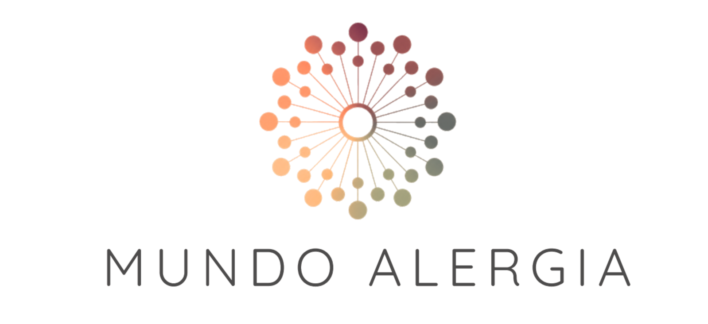

Mundo Alergia nace con una misión clara: ayudar a las personas a convivir mejor con sus alergias a través de productos seleccionados con criterio, información fiable y soluciones que mejoran su día a día.
No buscamos parecer una farmacia, un laboratorio ni un e-commerce tradicional. Buscamos construir una marca cercana, rigurosa y humana, capaz de transmitir confianza desde el primer vistazo.
Los valores que deben estar presentes en cada decisión de diseño son cuatro: Bienestar, Confianza, Claridad y Calidad de vida. No son decorativos — son criterios de decisión. Cuando hay que elegir entre dos caminos, ganará el que refuerce estos valores.
De las sesiones de la aceleradora y la investigación de campo identificamos tres perfiles principales:
Alta motivación de compra. Prioriza seguridad y criterio médico sobre el precio. Toma decisiones rápidas cuando confía en la fuente. El contenido educativo es un detonante de compra.
Ha probado muchos productos. Está "cansado de probar a ver si funciona". Valora la curaduría y el razonamiento detrás de cada recomendación. Potencialmente el mejor candidato al Club.
Accede principalmente por contenido SEO (artículos sobre pólenes, temporadas). Menor urgencia. Puede convertirse si el proceso es fácil y el precio justo. Aportará volumen de tráfico.
El diseño debe hablarle principalmente a P1 y P2 — las personas que ya saben que tienen un problema y buscan la solución correcta, no descubrir que tienen el problema.
El manual de marca desarrolló tres direcciones creativas. Se eligió la Dirección 3 — OXÍGENO por ser la que mejor equilibra aspiración y credibilidad sin caer en los extremos de las otras dos.
| Dirección | Concepto | Por qué no | Elegida |
|---|---|---|---|
| 1 — Refugio | Acogedora, protectora, verde salvia y mostaza | Demasiado "farmacia ecológica". Puede no transmitir rigor clínico suficiente. | — |
| 2 — Criterio | Elegante, curada, terracota y verde oliva | Demasiado premium aspiracional. Puede alejar a P1 (padres prácticos) por percibirse cara. | — |
| 3 — OXÍGENO | Contemporánea, serena, sofisticada e inspiradora | — | ✓ Elegida |
OXÍGENO transmite la sensación de alivio — el momento en que todo funciona mejor: el hogar, el aire, la vida cotidiana. No vende el producto; vende el resultado.
El símbolo es una rosa de tres arcos solapados inscrita en un círculo. Cada arco representa uno de los tres pilares del ecosistema: producto curado, contenido con criterio y orientación personalizada. Los arcos se solapan porque los tres trabajan juntos — ninguno funciona sin los otros.
La forma evoca equilibrio, armonía y la sensación de alivio que aparece cuando todo funciona mejor. Es reconocible a cualquier escala — desde favicon hasta packaging — lo que la hace válida para el largo plazo.
La web tiene una lógica de entrada clara: el usuario llega con un problema, no con un producto en mente. La arquitectura respeta ese estado mental y lo acompaña hasta la compra sin forzarlo.
Ve su situación reflejada en la home. El hero dice "Menos alérgenos, más vida" — no "Compramos productos de alergia". La entrada es emocional, no transaccional.
Elige su categoría por problema (Cuidado nasal, Noche segura, Hogar sin alérgeno) o completa el quiz de perfilado de 5 preguntas. Ambos caminos llevan al mismo lugar: productos relevantes para su caso.
Lee la introducción de la categoría (qué ayuda, qué vigilar) y la valoración multiparámetro del producto. Llega a la ficha ya convencido de por qué ese producto le conviene.
En la ficha de producto ve el precio público y el precio Club. El incentivo para registrarse es concreto y aparece en el momento de mayor intención de compra.
Email con artículos relevantes para su perfil, alertas de temporada alta y novedades de producto curadas. El Club es el mecanismo de retención.
El hero no muestra productos. Muestra el resultado de tenerlos: respirar mejor, dormir tranquilo, vivir sin limitarse. Video o imagen de alta resolución con overlay oscuro. Titular en serif grande. Dos CTAs diferenciados (explorar / unirse al Club) para capturar ambas intenciones de llegada.
Las tres categorías se presentan como fotografías a pantalla completa con el nombre del problema visible. El hover revela descripción y enlace. La decisión de diseño clave es que el usuario navega por lo que siente, no por el tipo de producto.
Se presenta antes que los productos individuales porque es el mecanismo que da sentido al precio diferenciado. El usuario debe entender el Club antes de llegar a la ficha de producto. Si llega sin conocerlo, el "precio Club" en la ficha no tiene contexto.
Máximo 3 productos destacados en la home. La tarjeta muestra imagen de solución (no del producto sobre fondo blanco), valoración por parámetros específicos de la categoría, precio público y precio Club. El botón de compra es secundario — el objetivo es que el usuario quiera saber más, no que compre desde la home.
Artículos con criterio clínico y fuente verificada. Función dual: captación orgánica (tráfico de búsqueda por síntomas y soluciones) y construcción de confianza (el usuario que ha leído dos artículos convierte más). Cada artículo enlaza con los productos que valida.
El perfilado previo es la clave. El formulario de pre-consulta captura historial, síntomas actuales y productos en uso — lo que permite al médico llegar preparado y dedica los 15 minutos a dar valor real, no a preguntas básicas. Eso justifica el precio y diferencia del sistema público.
La landing de lanzamiento tiene un objetivo único: captura de emails de personas interesadas antes de la apertura en septiembre de 2026. Toda la estructura está al servicio de ese objetivo sin renunciar a transmitir la identidad completa de la marca.
Para el usuario que quiere orientarse antes de comprometerse. No pide nada a cambio. Reduce la barrera de entrada.
Para el usuario con intención más clara. La gratuidad elimina la fricción. La palabra "Club" añade sentido de pertenencia.
Para quien ha recorrido toda la landing. En este punto ya tiene contexto completo de la propuesta. La promesa de acceso prioritario + precio de lanzamiento es el cierre.
Decisión clave: el formulario de email no está solo al final — está también en el hero y en la sección del Club. Tres puntos de captura, con mensajes ligeramente distintos, capturan usuarios en distintos momentos de convicción.
El modelo financiero asume una tasa de conversión de 2% sobre visitas únicas. La landing está diseñada para que ese porcentaje llegue al formulario con suficiente contexto como para dejar el email con convicción — no por impulso. Un lead convencido convierte mejor en apertura que un lead captado por curiosidad.
La decisión de hacer el Club completamente gratuito (sin cuotas de pago) responde a una lógica de negocio concreta, no a generosidad.
Cada usuario registrado nos dice qué tipo de alergia tiene, qué síntomas le preocupan, qué productos ya usa. Eso nos permite hacer recomendaciones personalizadas, segmentar las campañas de email y priorizar qué productos incorporar al catálogo.
El usuario que ve "24,90€ / Precio Club: 22,90€" y no está registrado tiene un incentivo concreto para registrarse en ese momento. La fricción del registro se justifica con un ahorro inmediato — no con beneficios futuros abstractos.
El descuento que cedemos al miembro del Club es menor que el coste de captación de ese mismo usuario vía paid. Un miembro que compra cada 3 meses con descuento del 8% genera más valor que un comprador único a precio completo.
El Club no es un programa de fidelización. Es la infraestructura de datos que hace posible la personalización y la retención a coste bajo.
La decisión de estructurar el catálogo por problemáticas en lugar de por tipo de producto es la más importante de toda la arquitectura de información. Determina cómo el usuario se relaciona con la tienda.
| Estructura tradicional | Nuestra estructura |
|---|---|
| Categoría: "Purificadores de aire" | Categoría: "Hogar sin alérgeno" |
| El usuario necesita saber ya qué quiere comprar | El usuario llega con un problema — lo acompañamos hasta la solución |
| Compara marcas y precios | Entiende por qué un producto concreto le ayuda a él |
| Compite con Amazon en comodidad y precio | No compite con Amazon — aporta algo que Amazon no puede dar |
La de mayor potencial de recurrencia (el irrigador nasal se usa a diario) y mayor credibilidad médica (requiere IAE + AEMPS). Rhinodouche como producto de entrada recomendado: marca española, accesible, alta rotación, buen margen.
Todo el mundo duerme. El dormitorio es el mayor punto de exposición a ácaros. El protector de colchón es la compra lógica inmediata después de un diagnóstico de alergia al polvo doméstico.
Purificadores y sensores de calidad del aire tienen tickets de 150-300€ y generan mucho contenido educativo. Aranet4 puede empezar como afiliado (sin riesgo de stock) mientras se negocian mayoristas.
Las valoraciones con estrellas no son genéricas. Cada categoría tiene sus propios parámetros de evaluación, lo que hace la comparación significativa para el usuario:
| Categoría | Atributos de valoración |
|---|---|
| Cuidado nasal | Eficacia probada · Facilidad de uso · Seguridad pediátrica |
| Noche segura | Barrera antiácaros · Comodidad al dormir · Facilidad de lavado |
| Hogar sin alérgeno | Eficacia de filtrado · Nivel de ruido · Coste de mantenimiento |
Las consultas médicas tienen una función doble: generan ingresos directos (son de pago) y anclan la credibilidad de toda la tienda. Una marca que te conecta con un alergólogo especialista no puede ser una tienda cualquiera.
El formulario de pre-consulta no es un cuestionario burocrático. Es el mecanismo que diferencia nuestra consulta de una consulta pública de 7 minutos:
Síntomas actuales, historial de diagnósticos, temporadas de mayor afectación, productos en uso, dudas concretas que quiere resolver.
Conoce al paciente antes de la llamada. Los 30 minutos se dedican a dar valor, no a preguntas de anamnesis básica. Eso es lo que justifica el precio.
El médico puede recomendar productos de nuestro catálogo en la misma sesión. Conversión de consulta a compra en el mismo contexto — sin fricción.
El perfilado es también un activo de diseño del producto: los datos agregados (anónimos) de los formularios de pre-consulta nos informan de cuáles son los síntomas más frecuentes, las dudas recurrentes y los productos en uso más habituales — lo que guía la curaduría del catálogo.
El modelo financiero asume tráfico de pago (CPC de 0,40€–0,60€). El contenido orgánico reduce el coste efectivo de adquisición y aporta tráfico que ninguna campaña puede mantener indefinidamente.
Un artículo bien posicionado sobre "qué purificador de aire comprar para ácaros" puede traer tráfico durante años, con coste marginal cero. Es la inversión de mayor ROI a largo plazo.
| Tipo | Ejemplo | Función |
|---|---|---|
| Guías de temporada | "Índice de pólenes: qué significa y cómo protegerte" | Captación SEO estacional. Alta intención de compra en primavera. |
| Comparativas de producto | "5 errores al elegir un purificador HEPA" | SEO de intención de compra. Convierte directamente. |
| Protocolos prácticos | "Protocolo de 15 min para reducir alérgenos del dormitorio" | Construcción de confianza. Contenido compartible. Linkable. |
| Artículos médicos | "Asma extrínseca vs. intrínseca: diferencias clave" | Posicionamiento de autoridad. Tráfico de P3 (alergia leve). |
Cada artículo finaliza con una sección "Soluciones validadas para esto" que enlaza directamente con los productos del catálogo relevantes. El lector que ha terminado un artículo sobre pólenes ya está convencido de que necesita un purificador — solo le queda elegir cuál.
El Demo Day requiere un prototipo clicable que permita a los jueces experimentar la propuesta, no solo escucharla. El formato elegido es HTML estático — funciona en cualquier dispositivo, sin dependencias, sin servidor, sin riesgo de fallo en el momento de la presentación.
| Formato | Ventajas | Desventajas para Demo Day |
|---|---|---|
| Figma | Rápido de hacer, fácil de iterar | Requiere cuenta/internet, no es "táctil", difícil de mostrar en móvil del jurado |
| Shopify real | Es la plataforma definitiva | Días de configuración, tema limitante, difícil de personalizar el UX diferenciador |
| HTML estático ✓ | Funciona offline, en cualquier dispositivo, controlamos 100% el diseño, compartible por link o QR | No tiene backend real (pero no lo necesita para la demo) |
La presentación del Demo Day no necesita una tienda funcional. Necesita que los jueces entiendan y vivan la propuesta de valor. El HTML estático hace exactamente eso — y lo hace mejor que cualquier otra opción en el tiempo disponible.
Documento preparado por
Mundo Alergia — Equipo fundador
Lanzamiento objetivo
Septiembre de 2026